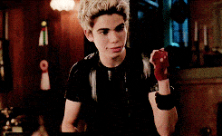

CARLOS
No filme Descendentes, Carlos é praticamente um escravo de sua mãe, Cruella, retocando a tinta branca de seu cabelo, penteando suas peles e tirando os galos dos seus pais. Isso faz com que Carlos considere que ir para Auradon não seja tão ruim assim, mas Cruella usa seu medo de caninos como uma maneira de controlá-lo. Na limusine indo para Auradon, Carlos começa a gostar de chocolate. Quando eles encontram pela primeira vez Doug, ele parece ter dificuldade em lembrar os nomes dos Sete Anões, embora Carlos parece saber os nomes de todos e lembra Doug de Atchim. Ele é o mais jovem do grupo aos 14 anos, sendo fã de vídeo games, também sendo capaz de achar a varinha da Fada Madrinha pelo computador. Quando Jay faz com que o alarme soe, Carlos ouve o telefone e pega. Ele consegue desativar o alarme e fazê-los pensar que foi um erro de sistema. A Fada Madrinha coloca Carlos e Jay num jogo chamado Torneio. Carlos não parece ser bom, mais Ben se oferece para ajudá-lo com isso. Como ele pratica corrida, Carlos é perseguido pelo campus por um vira-lata chamado Dude. Vendo que Dude não é ruim, Carlos começa a ter afeição por caninos, e leva Dude para onde quer que ele vá no filme. Durante o grande jogo entre Sherwood, Jay insiste que Carlos deve jogar com ele, e com a sua ajuda, a equipe ganha o jogo.
